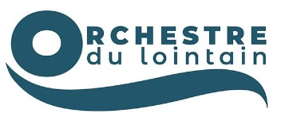
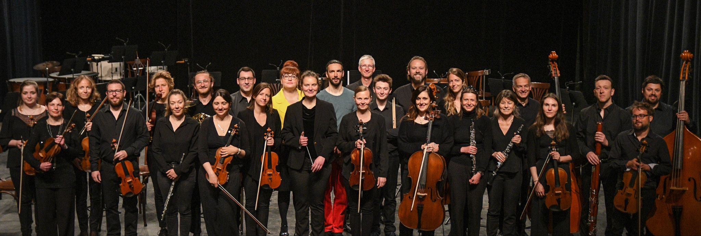
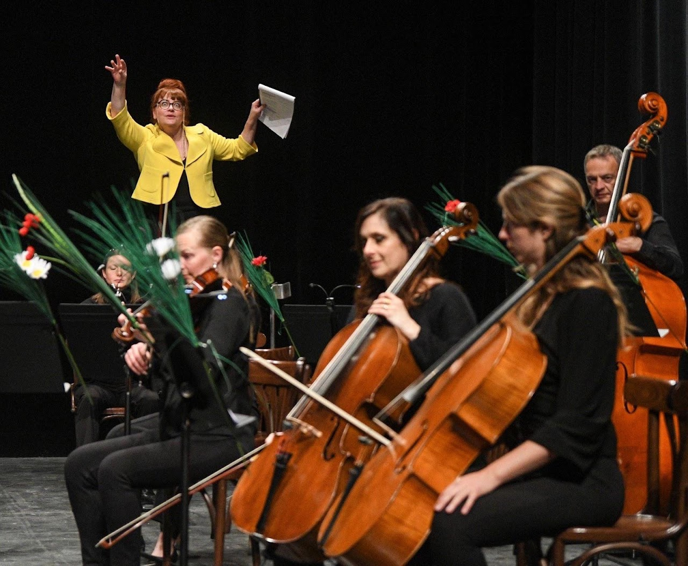
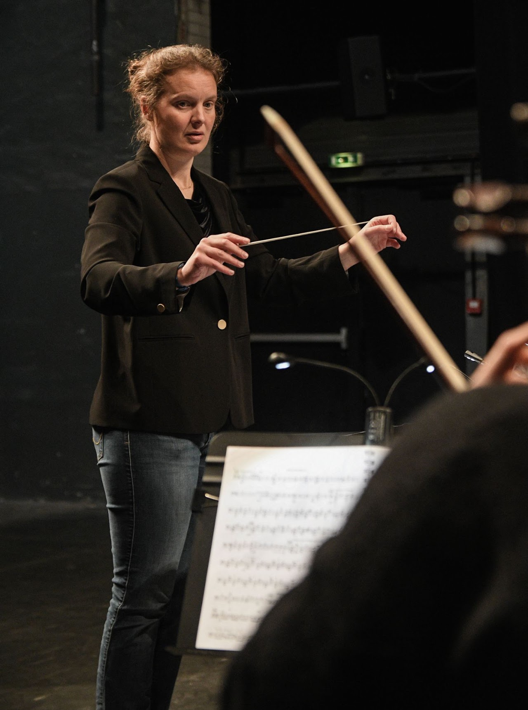
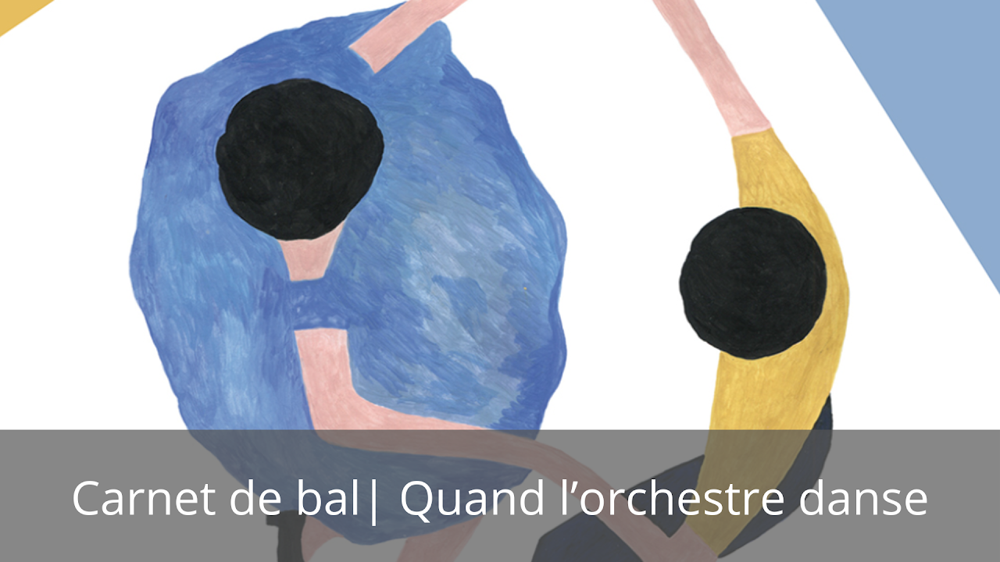
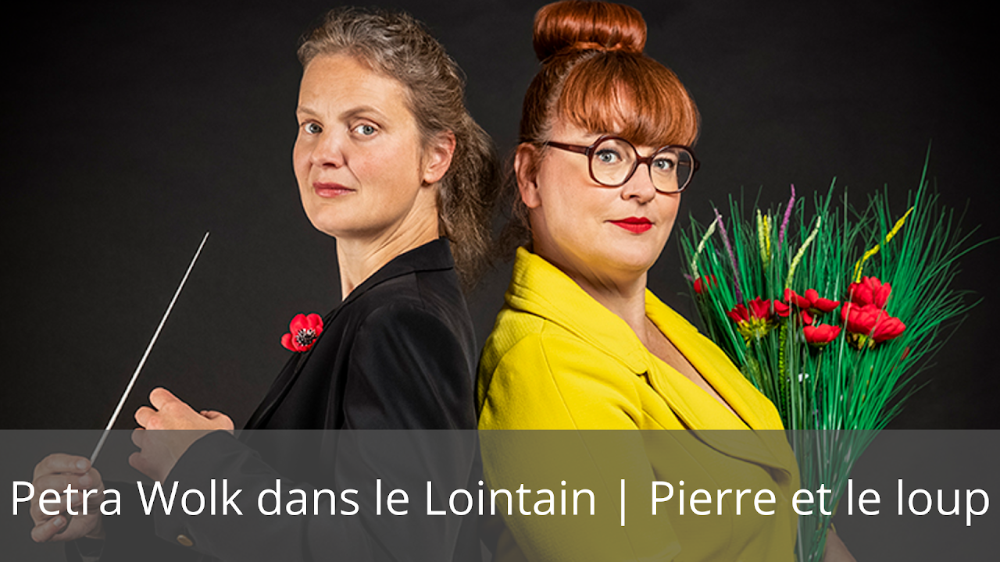
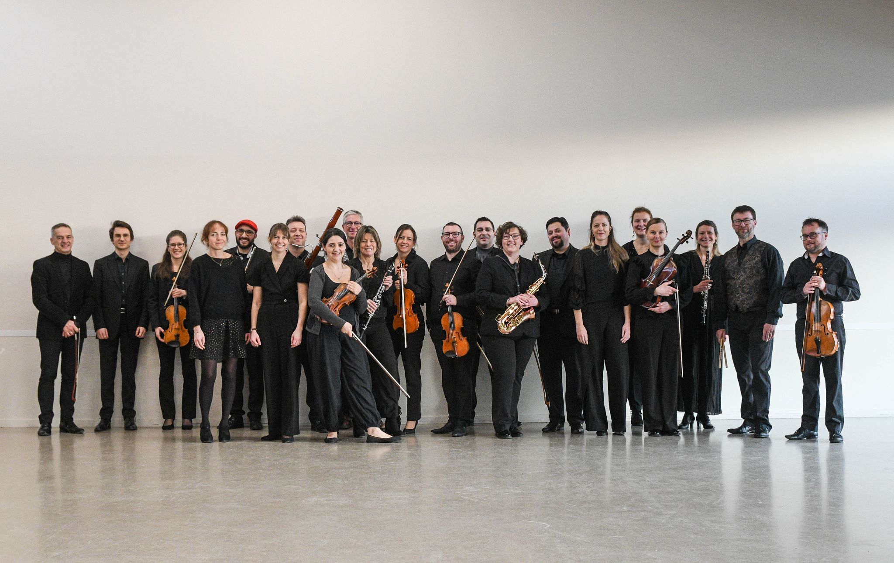

Un concert du nouvel an joyeux et enivrant
Wimille.fr

OrchestreVidéos
Photos






Presse
Wimille.fr
La Voix du Nord — Benjamin Ansel
Nord Littoral — Delphine Kwiczor
Écho du Pas-de-Calais
Nord Littoral — Delphine Kwiczor
Nord Littoral — Delphine Kwiczor
La Voix du Nord — Sylvie Demilly
La Voix du Nord — Isabelle Hodey